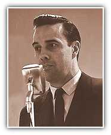
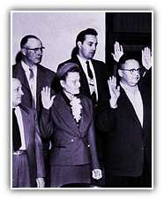

 Russell County Attorney
Two years later, he was elected as Russell County attorney. His salary was $248 a month - a few dollars less than the custodian who swept his floor each night.
One of his duties included approving welfare benefits for poor Russell County residents. Here he learned first-hand the real human cost of bad economic times. At one point his own grandparents fell on hard times and needed welfare benefits. Here he developed a deep compassion for the helpless.
Fighting
For the Helpless in the U.S. Congress
In 1960 he was elected to the U.S. House of Representatives. In his eight years, Dole stood for the disadvantaged by helping pass several historic laws that increased opportunity for all. The Civil Rights Act of 1964, the Voting Rights Act of 1965, and the Age Discrimination Act.
In 1968 the people of Kansas elected Bob Dole to represent them in the U.S. Senate. His first bill provided housing for the disabled. During the 1970s, he introduced bills to balance the budget, reform welfare, fix campaign finance laws, provide low-cost food to the disadvantaged and reduce the power of members of Congress. As a recognized champion of the middle class, he was named chairman of the Republican National Committee in 1971. Then, in 1976, President Gerald Ford tapped Senator Dole as his Vice Presidential running mate.

More opportunities. Smaller government. Stronger and safer families
Homepage | Register | Volunteers | Donations
About the Team | Dole Interactive | Newsroom | The Dole Agenda | On the Campaign Trail | Get Involved
Originally Paid for by Dole Kemp '96 Campaign Committee
Original Web Design by Presage Internet Campaigns
To Learn more about Bob Dole, Please Visit the Dole Institute
This Web Site is Presented for Educational Purposes by 4President.org